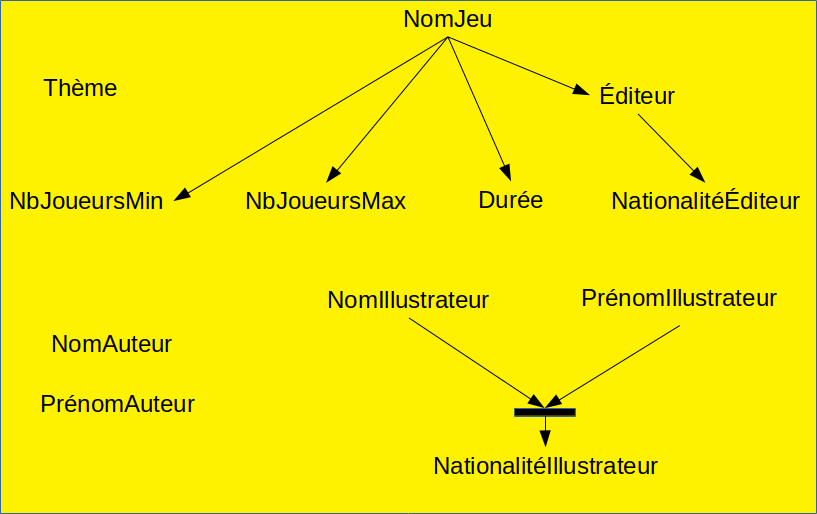

Bases de données relationnelles
I. Introduction
A. Exemple introductif
On souhaite informatiser notre ludothèque. On peut représenter cela sous la forme d'une table ainsi :
| Nom du jeu | Auteur 1 | Auteur 2 | Éditeur | NbJoueursMin | NbJoueursMax | Nationalité éditeur | Durée en min | Illustrateur | Nationnalité illustrateur | Thèmes |
|---|---|---|---|---|---|---|---|---|---|---|
| Les chevaliers de la table ronde | Bruno Cathala | S. Laget | Days of wonder | 3 | 7 | Française | 90 | Julien Delval | Française | Moyen-âge, Légende arthurienne |
| Cargo Noir | Serge Laget | Days of wonder | 2 | 5 | Française | 60 | Miguel Coimbra | Française | Marché Noir, Navigation marchande | |
| Era : medieval age | Matt Leacock | EggertSpiele | 1 | 4 | Allemande | 50 | Chris Quilliams | Canadienne | Médiéval, Construction | |
| Smash up | Paul Peterson | Iello | 2 | 4 | Française | 45 | Bruno Balixa, Dave Alsop, Franciso Rico Torres | Américaine | Fantastique, Monstre, Pirate |
Cet exemple servira de fil rouge tout au long de ce court, aussi devez-vous vous y référer chaque fois que cela sera nécessaire.
B. Quelques premières définitions
La plupart des bases de données sont exprimées en utilisant le modèle relationnnel.
Dans un tel modèle, les données sont stockées dans des tables, appelées Relations. Une relation est notamment définie par l'ensemble des noms des colonnes et leur type, appelé Schéma de relation, à savoir dans l'exemple (Nom du jeu, Auteur 1, Auteur 2, Éditeur, NbJoueursMin, NbJoueursMax, Nationalité éditeur, Durée en min, Illustrateur, Nationnalité illustrateur, Thèmes).
On appelle chaque ligne de la table un Enregistrement ou un Tuple. Les colonnes peuvent être appelées Attribut ou Champ. Les attributs sont caractérisés par un nom et un type (ou ensemble de définition).
C. Premiers constats
Une telle table présente plusieurs inconvénients :
- On a des redondances ; par exemple, la nationnalité de l'éditeur Days of Wonder, est précisée 2 fois ;
- La structure permet de préciser 2 auteurs au plus, mais un seul illustrateur. Du coup, Si on a plus de 2 auteurs ou plus de 2 illustrateurs, on doit triturer la structure de la table (c.f. le cas des illustrateurs pour le jeu Smash Up). Inversement, si on a moins de 2 auteurs, on perd de la place avec des cases vides ;
- Les contenus des cellules sont libres. Ainsi, l'auteur Serge Laget est référencé soit sous son nom complet Serge Laget, soit sous la forme S. Laget, ce qui ne facilite pas les recherches. De même, les jeux portant sur le Moyen-Âge sont référencés soit avec le thème Moyen-âge, soit avec le thème Médiéval ;
- Les valeurs pour le champ Thèmes peuvent contenir plusieurs informations. Ceci ne facilite pas les recherches.
D. Modification de la table
Pour éviter le problème des dépendances multiples (plusieurs auteurs et illustrateurs), on décide de représenter les informations précédentes sous la forme suivante :
| Nom du jeu | Auteur | Éditeur | NbJoueursMin | NbJoueursMax | Nationalité éditeur | Durée en min | Illustrateur | Nationnalité illustrateur | Thèmes |
|---|---|---|---|---|---|---|---|---|---|
| Les chevaliers de la table ronde | Bruno Cathala | Days of wonder | 3 | 7 | Française | 90 | Julien Delval | Française | Moyen-âge, Légende arthurienne |
| Les chevaliers de la table ronde | S. Laget | Days of wonder | 3 | 7 | Française | 90 | Julien Delval | Française | Moyen-âge, Légende arthurienne |
| Cargo Noir | Serge Laget | Days of wonder | 2 | 5 | Française | 60 | Miguel Coimbra | Française | Marché Noir, Navigation marchande |
| Era : medieval age | Matt Leacock | EggertSpiele | 1 | 4 | Allemande | 50 | Chris Quilliams | Canadienne | Médiéval, Construction |
| Smash up | Paul Peterson | Iello | 2 | 4 | Française | 45 | Bruno Balixa | Américaine | Fantastique, Monstre, Pirate |
| Smash up | Paul Peterson | Iello | 2 | 4 | Française | 45 | Franciso Rico Torres | Américaine | Fantastique, Monstre, Pirate |
| Smash up | Paul Peterson | Iello | 2 | 4 | Française | 45 | Dave Alsop | Américaine | Fantastique, Monstre, Pirate |
Avec une telle représentation, le problème de redondance devient alors criant.
Or les redondances peuvent engendrer des anomalies de mise à jour. On va donc chercher à re-structurer les relations (en les décomposant en plusieurs relations) pour limiter les redondances
II. Un peu de vocabulaire et de théorie...
A. Notion de dépendance fonctionnelle
1. Définitions
Pour décomposer une relation, celle décrivant notre ludothèque par exemple, on s'appuie sur la notion de dépendance fonctionnelle entre attributs :
Il y a dépendance fonctionnelle (df) d'un ensemble d'attributs E vers un attribut A si et seulement si, sur l'ensemble des tuples que peut contenir la relation, la valeur de A dépend fonctionnellement des valeurs des attributs de E. Autrement dit, pour tous les tuples ayant les mêmes valeurs pour les attributs de E, la valeur de A est identique.
Par ailleurs, on préfère avoir uniquement des champs atomiques :
Un attibut est atomique si et seulement si il ne contient qu'une seule valeur et que cette valeur n'est pas composite. La valeur ne peut donc pas être une collection de valeurs (comme les villes d'un département) et elle ne peut pas être décomposée en plusieurs valeurs distinctes (comme dans une adresse par exemple)
2. Exercices
Exercice 1 : Dans l'exemple introductif, déterminez les champs qui ne sont pas atomiques, et proposez un nouveau schéma de relation.
L'attribut Thèmes est bien évidemment un attribut non atomique, puisque, comme mentionné au-dessus, il peut contenir plusieurs thèmes.
L'atomicité des champs Auteur 1, Auteur 2 et Illustrateur est quant à elle discutable : si l'on souhaite pouvoir mieux caractériser les auteurs et ilustrateurs, il peut être souhaitable de distinguer prénom et nom.
On peut alors proposer le schéma de relation suivant :
Ω = (NomJeu, NomAuteur, PrénomAuteur, Éditeur, NbJoueursMin, NbJoueursMax, NationalitéÉditeur, Durée, NomIllustrateur, PrénomIllustrateur, NationnalitéIllustrateur, Thème)
Exercice 2 : Sur le schéma de relation Ω déterminé dans l'exercice précédent, donneez l'ensemble des dépendances fonctionnelles qui existent.
Il existe un grand nombre de dépendances fonctionnelles. Il y a bien sûr celles qui viennent naturellement à l'esprit :
- NomJeu → Éditeur
- NomJeu → NbJoueursMin
- NomJeu → NbJoueursMax
- NomJeu → Durée
- Éditeur → NationalitéÉditeur
- (NomIllustrateur, PrénomIllustrateur) → NationalitéIllustrateur
Mais il y a également des dépendances fonctionnelles tellement triviales qu'on a tendance à les oublier ; ce sont toutes les dépendances réflexives :
- NomJeu → NomJeu
- NbJoueursMin → NbJoueursMin
- ...
Et il y a également d'autres dépendances, toutes aussi triviales, obtenues par Augmentation :
- (NomJeu, NomÉditeur) → Nomjeu
- (NomÉditeur, NomAuteur, PrénomIllustrateur) → PrénomIllustrateur
- ...
La composition de fonction étant une loi de composition interne, la notion de dépendance fonctionnelle est également transitive. Et donc on a également par exemple :
- NomJeu → NationalitéÉditeur
Résumé des propriétés des dépendances fonctionnelles
- dépendances réflexives: il s'agit de dépendances de la forme A → A. Elles sont toujours vraies. On les appelle aussi des dépendances triviales.
- dépendances élémentaires : il s'agit de dépendances qui ne peuvent pas être obtenues par augmentation. Soit une dépendance f1 : X → A, avec X un ensemble d'attributs et A un attribut, toute dépendance obtenue par augmentation de f1 ie. en ajoutant des attributs dans la partie gauche, est une dépendance vraie.
- dépendances directes : il s'agit de dépendances qui ne peuvent pas être obtenues par transitivité. Soit les dépendances X → A et A → B (avec X un ensemble d'attributs et A et B deux attributs), la transitivité permet de déduire que la dépendance X → B est vraie également.
3. Couverture minimale
A partir d'un schéma de relation Ω et d'un ensemble de dépendances fonctionnelles DF, on essaie en général de déterminer un ensemble minimal de dépendances fonctionnelles non réflexives, élémentaires et directes à partir desquelles toutes les dépendances fonctionnelles vraies pour Ω peuvent être déduites. Pour s'assurer de ce dernier point, on va vérifier que la fermeture transitive de cet ensemble minimal est égale à la fermeture transitive de l'ensemble DF.
On appelle fermeture transitive d'un ensemble de dépendances fonctionnelles df l'ensemble ftdf obtenu en faisant l'union entre les dépendances de df et de toutes les dépendances fonctionnelles vraies que l'on peut obtenir en appliquant itérativement les règles de transitivité, de réflexivité et d'augmentation aux dépendances de df.
On appelle Couverture minimale d'une structure (Ω, DF1) une structure (Ω, CMDF) telle que :
- La fermeture transitive de CMDF est égale à la fermeture transitive de DF1 ;
- Aucune dépendance fonctionnelle de CMDF ne peut être éliminée sans perdre l'égalité des fermetures transitives. Autrement dit, on peut déduire les mêmes dépendances fonctionnelles à partir de DF1 et de CMDF.
Il existe des algorithmes pour calculer la couverture minimale d'un ensemble de dépendances fonctionnelles, mais cela dépasse le cadre de ce cours. Lorsque l'on va chercher à restructurer un schéma de relation par décomposition, on va utiliser uniquement la couverture minimale des dépendances fonctionnelles associées à ce schéma de relation.
Exercice 3 : Déterminez la couverture minimale du schéma de relation précédent.
Sur l'exemple précédent, une couverture minimale est la suivante : CMDF = {NomJeu → Éditeur, NomJeu → NbJoueursMin, NomJeu → NbJoueursmax, NomJeu → Durée, Éditeur → NationalitéÉditeur, (NomIllustrateur, PrénomIllustrateur) → NationalitéIllustrateur}
Remarque : cela suppose qu'il n'y a pas 2 jeux de mêmes noms, ni 2 illustrateurs homonymes.
On représente souvent un ensemble de dépendances fonctionnelles sous la forme d'un graphe exempt des df triviales.
Exercice 3bis : Représentez la couverture minimale obtenue à l'exercice 3 par un graphe de dépendances fonctionnelles.

B. Notion de clé
Une clé d'une structure (Ω, DF) est un sous-ensemble d'attributs K de Ω tel que pour tout attribut A de Ω la dépendance K → A est vraie ie. elle appartient à DF ou se déduit des dépendances de DF.
Corollaire : Dans une relation, il ne peut pas y avoir deux tuples dont les valeurs des attributs appartenant à la clef sont identiques.
Notation : Dans un schéma de relation, on représente en général les attributs faisant partie de la clé retenue en les soulignant.
NB: Il existe plusieurs clefs pour une même structure (Ω, DF). En particulier, si K est une clef alors tout sur-ensemble de K est une clef.
Une clé minimale d'une structure (Ω DF) est une clé dont aucun sous-ensemble n'est clé de (Ω DF).
Remarque : la clé minimale d'une relation n'est pas forcément unique. Ce sont celles qui vont nous intéresser pour la décomposition de notre relation.
Exercice 4 : Déterminer une clé minimale pour le cas de la ludothèque.
Une clé minimale de (Ω, CMDF) est : (NomJeu, NomAuteur, PrénomAuteur, NomIllustrateur, PrénomIllustrateur, Thème).
C. Formes Normales
Pour éviter un certain nombre de problèmes (redondance par exemple), différentes formes normales ont été définies pour les bases de données. Plus la forme normale vérifiée est élevée, moins il y a de redondances dans le schéma de relation.
NB: l'ensemble des schémas de relation vérifiant la forme normale I est inclus dans l'ensemble des schémas de relation vérifiant la forme normale I+1.
Voici les 3 premières :
Un schéma de relation est en Première Forme Normale (1FN) si et seulement si tous ses attributs sont atomiques. NB: c'est la base dans le modèle relationnel.
Un schéma de relation est en Deuxième Forme Normale (2FN) si et seulement si :
- Il est en 1FN ;
- Aucun attribut non clé ne dépend (au sens des DF) que d'une partie d'une clé minimale.
N.B. : par "attribut non clé", il faut comprendre "n'appartenant à aucune une clé minimale".
Un schéma de relation est en Troisième Forme Normale (3FN) si et seulement si :
- Il est en 2FN ;
- Il n'y a aucune dépendance fonctionnelle entre attributs non clés.
N.B. : par "attribut non clé", il faut comprendre "non membre d'une clé minimale".
Remarque : La 3FN ne garantit pas totalement l'absence de redondance dans tous les cas.
Exercice 5 : Déterminez si la structure (Ω, CMDF) est en 1FN, en 2FN et en 3FN.
La structure (Ω, CMDF) est en 1FN puisque tous ses attributs sont atomiques (suite au travail fait à l'exercice 1).
La structure (Ω, CMDF) n'est pas en 2FN puisque l'attribut NationalitéIllustrateur ne dépend que d'une partie de la clé (NomIllustrateur, PrénomIllustrateur).
La structure (Ω, CMDF) n'est pas en 3FN puisqu'elle n'est pas en 2FN.
D. Transformer un schéma de relation en 3FN
Il est toujours possible de transformer un schéma de relation en 3FN. Pour cela, Il va falloir créer plusieurs relations afin de se ramener aux règles des différentes formes normales.
1. Rendre tous les attributs atomiques
Cette première phase permet d'obtenir une relation en 1FN. C'est ce qui a été fait dans l'exercice 1.
2. Passer en 2FN
Pour passer en 2FN, on va éclater le schéma de relation initial en plusieurs schémas, de façon à ce que chaque fois qu'on a une dépendance fonctionnelle de la forme (partieClé → attributNonClé), on crée une relation spécifique avec pour clé partieClé et pour attribut attributNonClé. Une fois ceci fait, si plusieurs relations ont même clé, on les fusionne en 1 seule relation ayant tous les attributs des relations de départ. Par ailleurs, on gardera une relation avec l'ensemble des attributs de la clé minimale.
Exercice 6 : Transformer la structure (Ω, CMDF) en une structure en 2FN.
- R1 = (NomJeu, NomAuteur, PrénomAuteur, NomIllustrateur, PrénomIllustrateur, Thème)
- R2 = (NomJeu, Éditeur, NbJoueursMin, NbJoueursMax, Durée, NationalitéÉditeur)
- R3 = (NomIllustrateur, PrénomIllustrateur, NationalitéIllustrateur)
3. Passer en 3FN
Pour passer en 3FN, pour chaque dépendance de la forme AttributNonClé1 → AttributNonClé2, on va créer une table (AttributNonClé1, AttributNonClé2), et on supprime AttributNonClé2 de la relation de départ. À la fin du processus, on fusionne les tables de même clé.
Exerice 7 : Passer le schéma de relation précédent en 3FN
Dans le schéma en 2FN, la seule df violant la règle de la 3FN est la df Éditeur → NationalitéÉditeur. On obtient donc :
- R1 = (NomJeu, NomAuteur, PrénomAuteur, NomIllustrateur, PrénomIllustrateur, Thème)
- R2a = (NomJeu, Éditeur, NbJoueursMin, NbJoueursMax, Durée)
- R2b = (Éditeur, NationalitéÉditeur)
- R3 = (NomIllustrateur, PrénomIllustrateur, NationalitéIllustrateur)
Exercice 8 : Transformez la table donnée en énoncé en plusieurs tables conformes au schéma de relation obtenu dans l'exercice précédent.
| R1 | |||||
|---|---|---|---|---|---|
| NomJeu | NomAuteur | PrénomAuteur | NomIllustrateur | PrénomIllustrateur | Thème |
| Les chevaliers de la table ronde | Cathala | Bruno | Delval | Julien | Moyen-âge |
| Les chevaliers de la table ronde | Laget | Serge | Delval | Julien | Moyen-âge |
| Les chevaliers de la table ronde | Cathala | Bruno | Delval | Julien | Légende Arthurienne |
| Les chevaliers de la table ronde | Laget | Serge | Delval | Julien | Légende Arthurienne |
| Cargo Noir | Laget | Serge | Coimbra | Miguel | Marché noir |
| Cargo Noir | Laget | Serge | Coimbra | Miguel | Navigation marchande |
| Era: medieval age | Leacock | Matt | Quilliams | Chris | Médiéval |
| Era: medieval age | Leacock | Matt | Quilliams | Chris | Construction |
| Smash Up | Peterson | Paul | Balixa | Bruno | Fantastique |
| Smash Up | Peterson | Paul | Torres | Francisco Rico | Fantastique |
| Smash Up | Peterson | Paul | Alsop | Dave | Fantastique |
| Smash Up | Peterson | Paul | Balixa | Bruno | Monstre |
| Smash Up | Peterson | Paul | Torres | Francisco Rico | Monstre |
| Smash Up | Peterson | Paul | Alsop | Dave | Monstre |
| Smash Up | Peterson | Paul | Balixa | Bruno | Pirate |
| Smash Up | Peterson | Paul | Torres | Francisco Rico | Pirate |
| Smash Up | Peterson | Paul | Alsop | Dave | Pirate |
| R2a | ||||
|---|---|---|---|---|
| NomJeu | Éditeur | NbJoueursMin | NbJoueursMax | Durée |
| Les chevaliers de la table ronde | Days of wonder | 3 | 7 | 90 |
| Cargo Noir | Days of wonder | 2 | 5 | 60 |
| Era: medieval age | EggertSpiele | 1 | 4 | 50 |
| Smash up | Iello | 2 | 4 | 45 |
| R2b | |
|---|---|
| Éditeur | NationalitéÉditeur |
| Days of wonder | Française |
| EggertSpiele | Allemande |
| Iello | Française |
| R3 | ||
|---|---|---|
| NomIllustrateur | PrénomIllustrateur | NationalitéIllustrateur |
| Delval | Julien | Française |
| Coimbra | Miguel | Française |
| Quilliams | Chris | Canadienne |
| Balixa | Bruno | Américaine |
| Alsop | Dave | Américaine |
| Torres | Francisco Rico | Américaine |
E. Remarque sur la 3FN et sur le travail fait précédemment
La 3FN permet d'éviter un certain nombre de redondances, mais ne les supprime pas toutes, comme on peut le voir sur l'exemple précédent. On peut bien sûr obtenir mieux, mais avec un schéma qui n'est pas équivalent au schéma initial. Les explications dépassent cependant le cadre de ce cours.
Par ailleurs, procéder comme cela a été fait précédemment ne permet pas de mettre en évidence que les attributs (NomAuteur, PrénomAuteur) correspondent à une même entité, à savoir la notion d'Auteur.